On this page, the first section of our ever growing (?) collection of tutorials, I will demonstrate the basic operation you will need to perform over and over again in your life as a computer artist: Generate isolated parts of a picture and combine them with a random background. What we want to achieve in this example is to generate a 3-dimensional text logo flying (and movable) over the background (a simple uni-color layer in our case, but you will easily see that you could use any other (stack of) layers/images instead. Start with a plain white picture, black as the foreground color and open the layer dialog!
Use the text tool to add some text. You will get a floating layer which you can also see if you look at the layers dialog. You can use the move tool to move the selection where you want to have it. You can anchor it at the white layer under it by clicking outside of the selection with the move tool still active. You will notice that the pointer changes into a down-arrow when you're outside of the floating selection and into a 4-arrow when inside it. This is to give visual feedback which of the two actions (moving or anchoring) a click will trigger. You should have one layer with black text on white background. Using <Image>Image->Colors->Invert you will achieve something like the picture above.
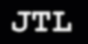 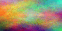
First of all: Blur the image a bit (Gaussian blur at 5 may be a good start). Now add a new layer to the image with the help of the layers dialog's Ops menu. Choose it to be white. It will be created above the just made text layer effectively hiding it. It will be active which can be seen from the fact that it has a blue background in the layers dialog. Click some times on the eye symbol to see how you can make a layer invisible and make the other layer active by clicking on its small preview in the layer dialog. At the end, leave the new white layer visible and active. Use the plasma plugin to make this layer a little colorful (Yes, you are invited to experiment with the parameters...). The layer dialog should look something like this now:
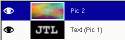
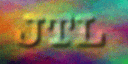
It's getting funny now: Use the bumpmap plugin with the blurred text layer as a bumpmap on the plasma layer. You can play with the other parameters, but they have sensible defaults. You'll get the image to the left. Now (still on the plasma layer) choose Add layer mask from the layer dialog menu. Choose the mask to be white. Nothing will change on the image for now, but the layer dialog will look like this:
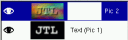
You can toggle whether a layers mask or the actual picture is active by clicking on their previews in the layers dialog.
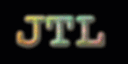
Now activate the text layer again. (you don't have to make the layers on top invisible to work on this layer. It's enough that you activate it in the layers dialog.) Now do <Image>Edit->Copy. Make sure you have the mask of the top layer selected and the layer is activated. Choose <Image>Edit->Paste. You will again get a floating selection, shown in the layer dialog like this:
Use the layer dialog menu to Anchor Layer which will anchor the floating selection into the previous activated layer (which is the mask of the plasma layer in our case). This will leave you with the following scenario:
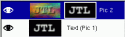
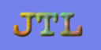
Now add a new layer and fill it with some color (e.g. with the help of the bucket fill tool) and use Raise Layer or Lower Layer from the layer dialog menu to achieve something like this:
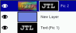
Now you'll see that the image of the logo isn't very sharp. We'll change this now. Make sure you have selected the plasma layer's mask and open <Image>Image->Adjust->Levels. This tool is one of the most important tools you have! Play with the little triangles you'll see in the two grey gradients and watch their effect on the image. For now, try to achieve something like the following:
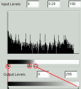
What we do here is making the border of the mask sharper, and by that means, sharpening the whole picture (the area which is neither 100% opaque nor transparent will become smaller). But we can easily avoid the picture getting pixel-steps by leaving still a smooth transition between opaque and transparent parts of the layer. (If you didn't realize it by now - I bet you did - the layer mask works in such a way that all black parts of the mask will become transparent parts of the layer and all white parts will stay opaque (with smooth transitions realized by values of grey).
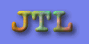
Using the layer menu you will have noticed the entry Duplicate Layer. Use this now. Then use Apply Layer Mask and Lower Layer which should leave you with something like this:
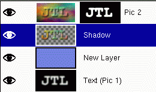
Make sure you checked Preserve Transparency and then use the paint tool to make the copy of the logo black (You don't have to be careful: The preserve transparency button will let you paint only on opaque parts of the image). This will give you:
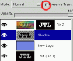
Now make sure you unchecked the button again, blur the layer and move it (with the move tool) some pixels to the right and downwards. Adjust the transparency with the slider so the background will shine through: You've just generated a so-called drop shadow, which greatly enhances the 3d effect and is used in very many places.
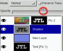
That's it! Now have a lot of fun making flying logos!